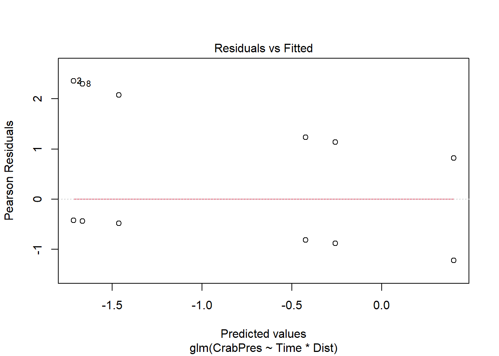
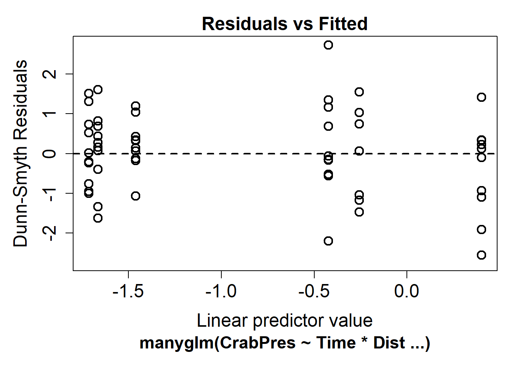

X Dist Time CrabPres
1 1 0 5 0
2 2 0 5 1
3 3 0 5 1
4 4 0 5 0
5 5 0 5 0
6 6 2 5 0Introducción y Datos Binarios
Introducción y datos binomiales
Los modelos lineales (por ejemplo, regresión lineal) se utilizan para modelar la relación entre una variable de respuesta continua \(y\) y una o más variables explicativas \(x_1, x_2, \cdots\). Cuando tenemos una variable de respuesta discreta, utilizamos modelos lineales generalizados (GLM).

Por ejemplo, si hemos realizado un estudio en una playa y queremos analizar cómo varía la presencia de un cangrejo en función del tiempo y la distancia desde la línea de agua, la variable de respuesta es discreta: la presencia o ausencia de un cangrejo en una determinada réplica. Las primeras filas del conjunto de datos se verían así:
Propiedades de los GLM. Los datos de respuesta discreta, como los conteos y los datos de presencia/ausencia, generalmente muestran una relación media-varianza. Por ejemplo, para los conteos que en promedio son 5, esperaríamos que la mayoría de las muestras estuvieran entre aproximadamente 1 y 9, pero para los conteos que en promedio son 500, la mayoría de las observaciones tenderán a estar entre 450 y 550, lo que nos dará una varianza mucho mayor cuando la media sea grande.
Los modelos lineales asumen una varianza constante. Es posible que hayas aprendido a transformar datos de conteo y luego ajustar un modelo lineal. Esto puede reducir la relación media-varianza, pero no la eliminará por completo, especialmente si tienes muchos ceros en tus datos. Para analizar datos discretos de manera precisa, necesitamos utilizar GLM.
Un GLM realiza algunas suposiciones importantes (las comprobaremos más adelante en nuestros ejemplos):
- Los \(y\) observados son independientes, condicionales a algunos predictores \(x\)
- La respuesta \(y\) proviene de una distribución conocida con una relación media-varianza conocida
- Existe una relación lineal entre una función conocida \(g\) de la media de \(y\) y los predictores \(x\)
\[ g(\mu_y) = \alpha + \beta_1 x_1 + \beta_2 x_2 + \cdots \]
Nota: las funciones de enlace g() son una parte importante del ajuste de GLM, pero están fuera del alcance de este tutorial introductorio. Lo único que necesitas saber es que el enlace predeterminado para datos binomiales es logit() y para datos de conteo es log(). Para obtener más información, consulta ?family.
Ejecutando el análisis
Datos binomiales
Primero, te mostraremos cómo ajustar un modelo a datos binomiales, es decir, datos de presencia/ausencia o datos 0/1. Ajustar GLM (modelos lineales generalizados) utiliza una sintaxis muy similar a la de los modelos lineales. Utilizamos la función glm en lugar de lm. También necesitamos agregar un argumento family para especificar si tus datos son de conteo, binomiales, etc.
Para este ejemplo práctico, descarga el conjunto de datos de muestra sobre la presencia y ausencia de cangrejos en la playa, Crabs.csv, e impórtalo a R.
Crab_PA <- read.csv("Crabs.csv", header = T)Para probar si la probabilidad de presencia de cangrejos cambia con el tiempo (un factor) y la distancia (una variable continua), ajustamos el siguiente modelo. La variable de respuesta (presencia/ausencia de cangrejos) es binomial, por lo que usamos family=binomial.
ft.crab <- glm(CrabPres ~ Time * Dist, family = binomial, data = Crab_PA)Supuestos a verificar
Antes de examinar los resultados de nuestro análisis, es importante verificar que nuestros datos cumplan con los supuestos del modelo que utilizamos. Veamos todos los supuestos en orden.
Supuesto 1: Los valores observados \(y\) son independientes, condicionales a algunos predictores \(x\)
No podemos verificar este supuesto a partir de los resultados, pero puedes asegurarte de que sea cierto tomando una muestra aleatoria para tu diseño experimental. Si tu diseño experimental involucra alguna pseudo-replicación, este supuesto se violará. Para ciertos tipos de pseudo-replicación, puedes utilizar modelos mixtos en su lugar.
Supuesto 2: La respuesta \(y\) proviene de una distribución conocida con una relación media-varianza conocida
La relación media-varianza es la principal razón por la que utilizamos GLM en lugar de modelos lineales. Necesitamos verificar si la distribución modela bien la relación media-varianza de nuestros datos. Para datos binomiales, esto no es una gran preocupación, pero más adelante, cuando analicemos datos de conteo, será muy importante. Para verificar este supuesto, observamos un gráfico de residuos e intentamos ver si hay una forma de abanico.
plot(ft.crab, which = 1)
Desafortunadamente, la función que permite la nacionalización delos resultados de glm nos muestra un gráfico muy extraño debido a la discreción de los datos (es decir, muchos puntos superpuestos).
Para obtener un gráfico más útil, podemos ajustar el modelo utilizando la función manyglm del paquete mvabund. Necesitamos un ligero cambio en el argumento family; para manyglm, escribimos family = "binomial".
library(mvabund)
ft.crab.many <- manyglm(CrabPres ~ Time * Dist, family = "binomial", data = Crab_PA)
plot(ft.crab.many)
Ahora podemos buscar una forma de abanico en el gráfico residual. Para estos datos, no parece haber una forma de abanico, por lo que podemos concluir que la suposición de media-varianza que hizo el modelo fue razonable para nuestros datos. Los residuos en este gráfico tienen una componente aleatoria. Si ves un patrón, es mejor repetir el gráfico varias veces para ver si el patrón es real.
Suposición 3: Existe una relación lineal entre una función conocida \(g\) de la media de \(y\) y los predictores \(x\).
Para verificar esta suposición, revisamos el gráfico residual anterior en busca de no linealidad o una forma de U. En nuestro caso, no hay evidencia de no linealidad. Si los residuos parecen descender y luego ascender, o ascender y luego descender, es posible que necesitemos agregar una función polinómica de los predictores utilizando la función poly.
Interpretación de los resultados
Si todas las verificaciones de suposiciones están bien, podemos analizar los resultados que nos proporcionó el modelo. Las dos funciones principales para la inferencia son las mismas que para los modelos lineales: summary y anova.
Los valores p que te dan si usas glm para ajustar el modelo funcionan bien en muestras grandes, aunque aún son aproximados. Para modelos binomiales en particular, los valores p de la función summary pueden ser curiosos, y preferimos usar la función anova para ver si los predictores son significativos. La función summary() sigue siendo útil para ver la ecuación del modelo.
anova(ft.crab, test = "Chisq")Analysis of Deviance Table
Model: binomial, link: logit
Response: CrabPres
Terms added sequentially (first to last)
Df Deviance Resid. Df Resid. Dev Pr(>Chi)
NULL 56 71.097
Time 1 6.6701 55 64.427 0.009804 **
Dist 1 0.7955 54 63.631 0.372448
Time:Dist 1 0.1647 53 63.466 0.684852
---
Signif. codes: 0 '***' 0.001 '**' 0.01 '*' 0.05 '.' 0.1 ' ' 1The p-value for Time is small (P<0.01), so we conclude there is an effect of time on the presence of crabs, but no effect of distance or an interaction between time and distance. This sample is reasonably large, so these p-values should be a good approximation. For a small sample it is often better to use resampling to calculate p-values. When you use manyglm the summary and anova functions use resampling by default.
El p-valor para tiempo es pequeño (p < 0.01), por lo tanto, concluimos que hay un efecto del tiempo en la presencia de cangrejos, pero no hay un efecto de la distancia ni una interacción entre el tiempo y la distancia. Esta muestra es bastante grande, por lo que estos p-valor deberían ser una buena aproximación. Para una muestra pequeña, a menudo es mejor utilizar remuestreo para calcular los p-valor. Cuando utilizas manyglm, las funciones summary y anova utilizan remuestreo de forma predeterminada.
anova(ft.crab.many)Time elapsed: 0 hr 0 min 0 secAnalysis of Deviance Table
Model: CrabPres ~ Time * Dist
Multivariate test:
Res.Df Df.diff Dev Pr(>Dev)
(Intercept) 56
Time 55 1 6.670 0.011 *
Dist 54 1 0.795 0.370
Time:Dist 53 1 0.165 0.700
---
Signif. codes: 0 '***' 0.001 '**' 0.01 '*' 0.05 '.' 0.1 ' ' 1
Arguments: P-value calculated using 999 iterations via PIT-trap resampling.En este caso, los resultados son bastante similares, pero en muestras pequeñas a menudo puede marcar una gran diferencia.
También puedes utilizar summary con las funciones glm o manyglm. Esto se interpreta de manera similar a la regresión lineal, pero necesitamos incluir la función de enlace g.
summary(ft.crab)
Call:
glm(formula = CrabPres ~ Time * Dist, family = binomial, data = Crab_PA)
Coefficients:
Estimate Std. Error z value Pr(>|z|)
(Intercept) -3.00604 1.47469 -2.038 0.0415 *
Time 0.25835 0.17439 1.481 0.1385
Dist -0.03193 0.23923 -0.133 0.8938
Time:Dist 0.01143 0.02830 0.404 0.6863
---
Signif. codes: 0 '***' 0.001 '**' 0.01 '*' 0.05 '.' 0.1 ' ' 1
(Dispersion parameter for binomial family taken to be 1)
Null deviance: 71.097 on 56 degrees of freedom
Residual deviance: 63.466 on 53 degrees of freedom
AIC: 71.466
Number of Fisher Scoring iterations: 4Si \(p\) es la probabilidad de presencia de cangrejos, esta salida nos dice
\[ logit(p) = -3.01 + 0.26 \times \text{Time} -0.03 \times \text{Dist} +0.01 \times \text{Time} \times \text{Dist}\]
Comunicación de los resultados
Los resultados de los GLM se comunican de la misma manera que los resultados de los modelos lineales. Para un predictor es suficiente con escribir una línea, por ejemplo: “Hay evidencia sólida de que la presencia de cangrejos varía con el tiempo (p = 0.01)”. Para varios predictores, es mejor mostrar los resultados en una tabla. También debes indicar qué distribución se utilizó (por ejemplo, Binomial para presencia/ausencia, Poisson o binomial negativa para recuentos) y si se utilizó remuestreo para la inferencia.
Más ayuda
Puedes escribir ?glm y ?manyglm en R para obtener ayuda con estas funciones.
Faraway, JJ. 2005. Extending the linear model with R: generalized linear, mixed effects and nonparametric regression models. CRC press.
Zuur, A, EN Ieno and GM Smith. 2007. Analysing ecological data. Springer Science & Business Media, 2007.
Más consejos sobre la interpretación de coeficientes en GLMs
Autor: Gordana Popovic
Año: 2016
Última actualización: Nov. 2023